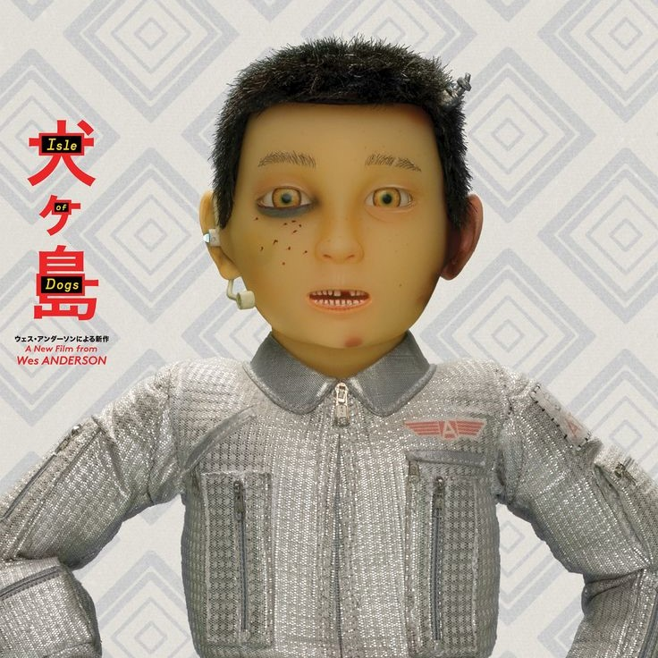
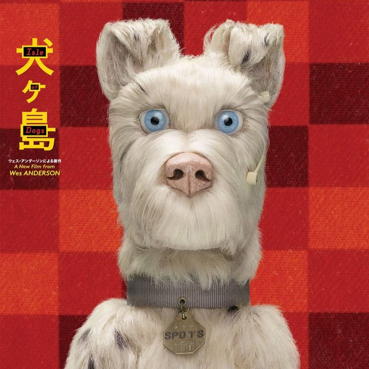
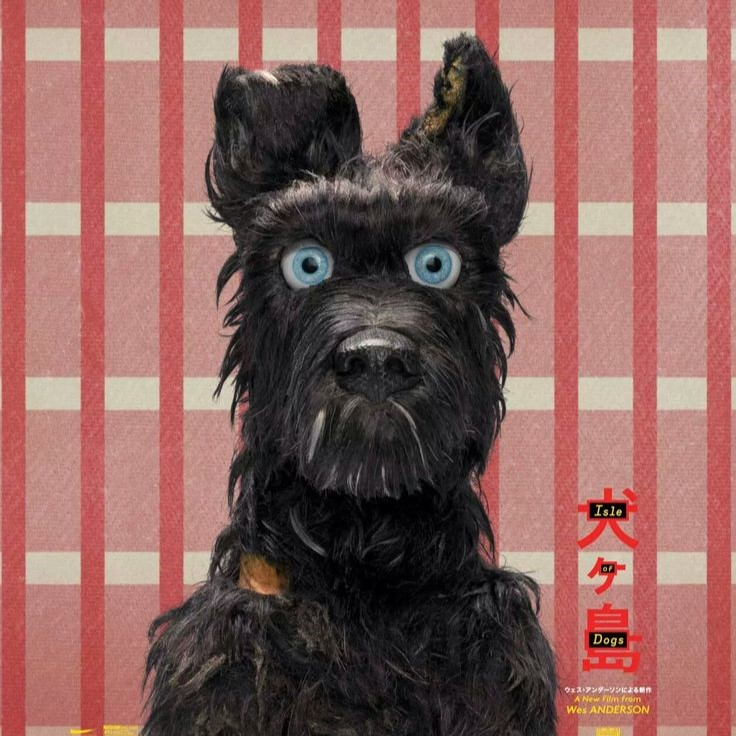
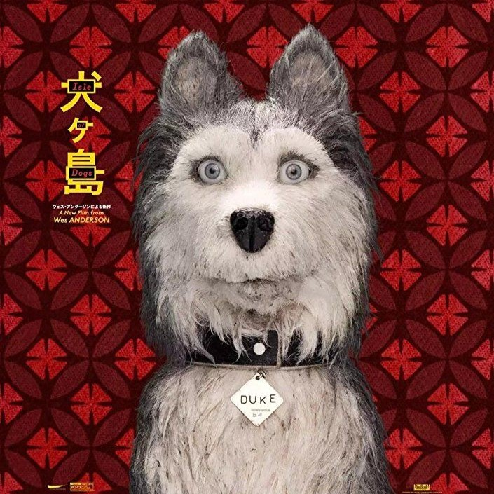
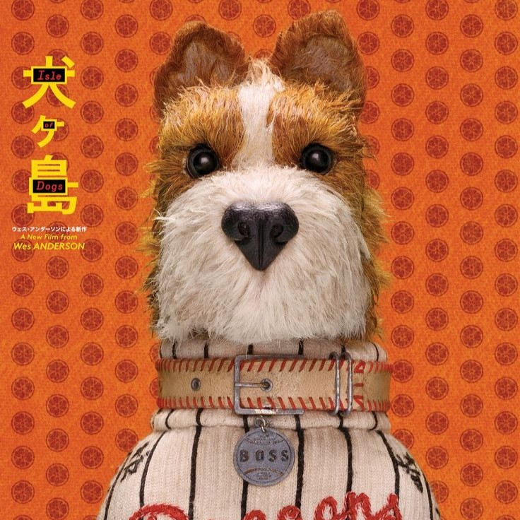
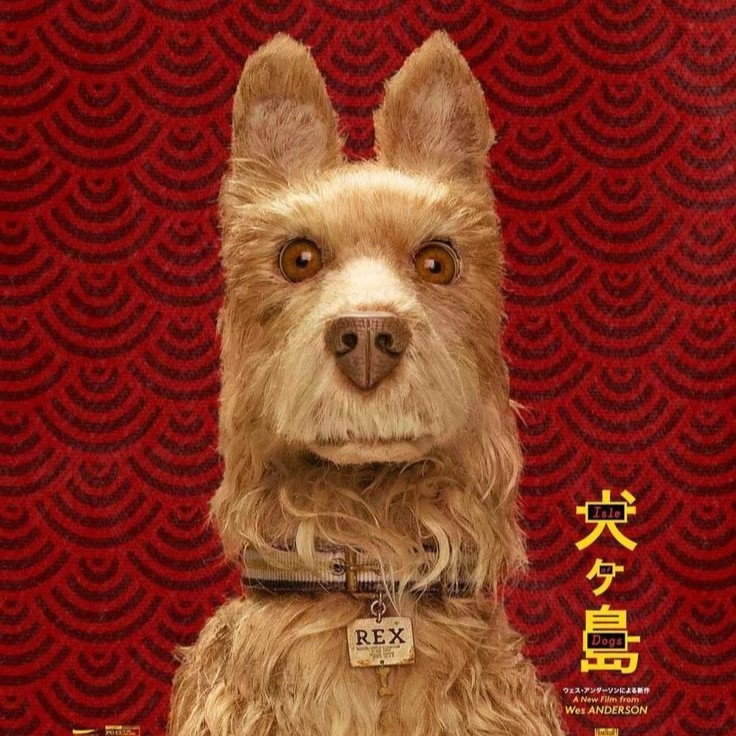
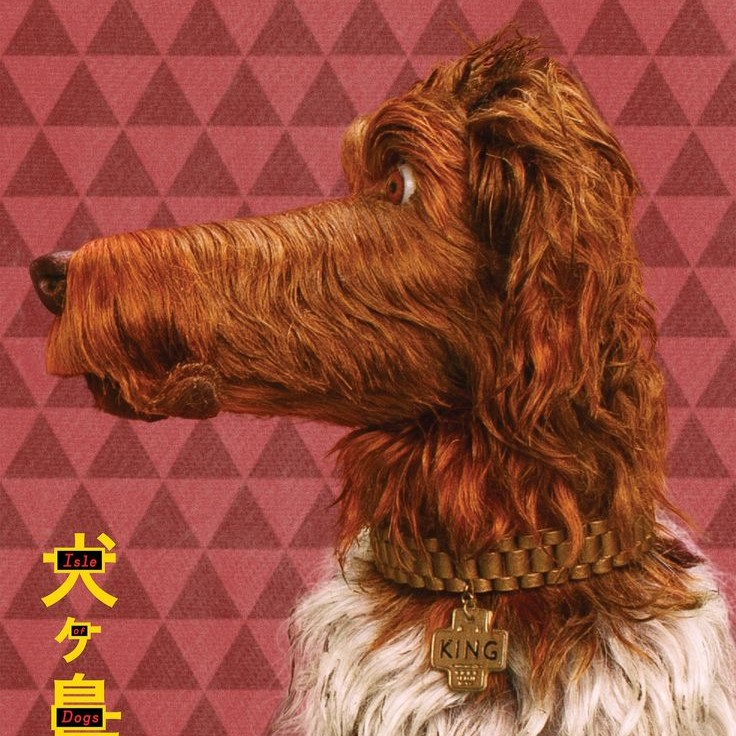
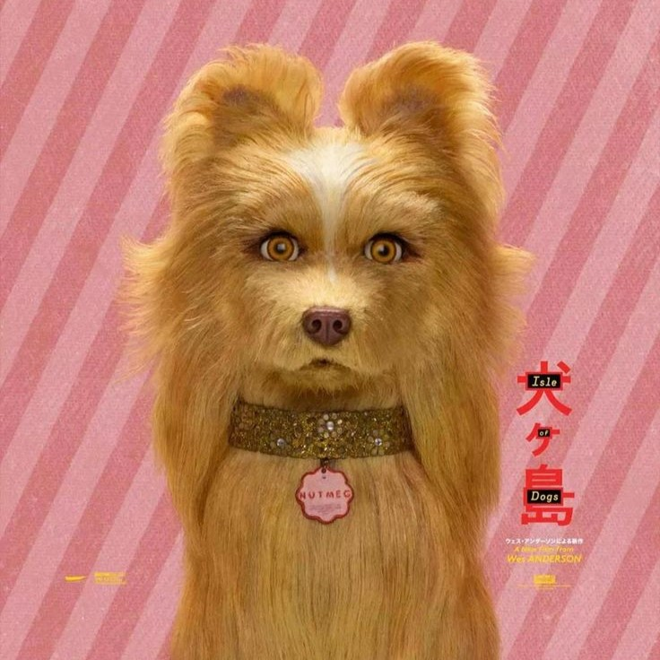
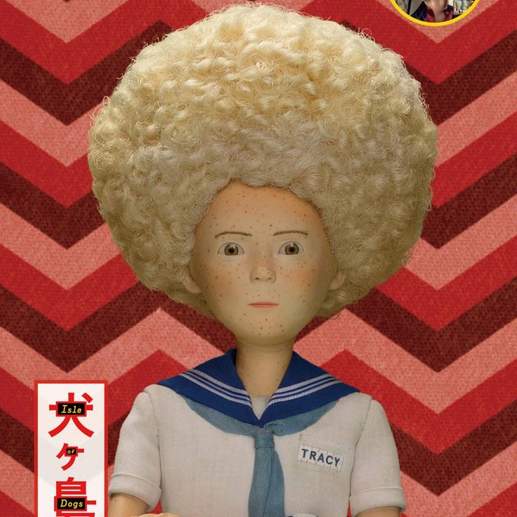

Personagens

Atari
Garoto corajoso que vai em busca de seu cachorro.

Spots
O leal amigo de Atari, primeiro a ser levado pra ilha.

Chief
Um líder natural, que viveu nas ruas sujas do Japão.

Duke
Duke é tagarela e sempre atento as notícias da ilha.

Boss
Antes da ilha, era mascote de um time de beisebol.

Rex
Rex é diplomata e sempre o mais racional entre eles

King
King era mascote de uma marca de produtos para cães.

Nutmeg
Nutmeg era treinada para shows, e par romântico de Cheif

Tracy
Estudante americana de intercâmbio que está investigando o governo